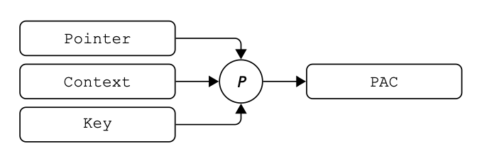
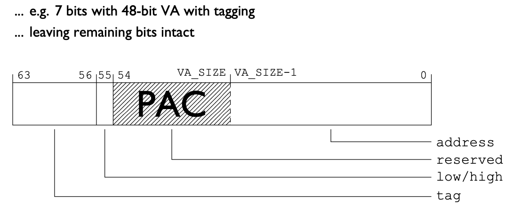
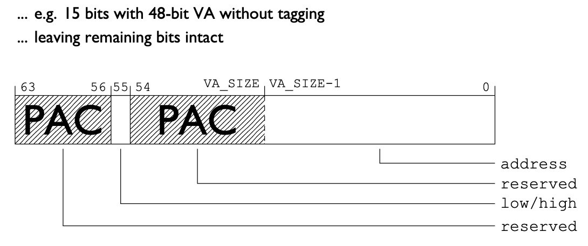
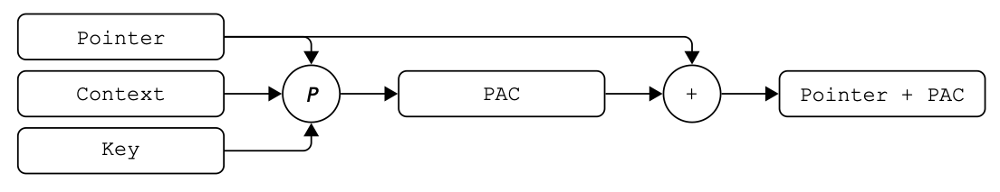
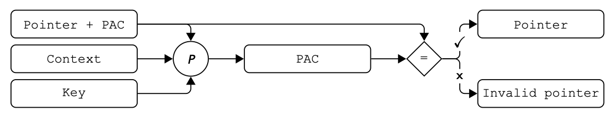
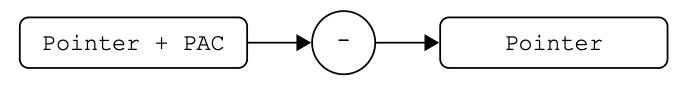

Pointer Authentication
By Idan Rosenzweig
Memory corruption vulnerabilities remain one of the most prevalent and dangerous classes of software security issues, enabling attackers to forge or substitute pointers and hijack control flow through techniques such as Return-Oriented Programming (ROP), Jump-Oriented Programming (JOP), or arbitrary code execution. Traditional defenses—including Address Space Layout Randomization (ASLR), stack canaries, and Data Execution Prevention (DEP)—provide valuable protection but often fall short against sophisticated attackers who can leak addresses, chain gadgets, or exploit similar tactics.
Pointer Authentication offers a cryptographically grounded countermeasure specifically designed to mitigate pointer forgery and corruption. This paper explores the theoretical foundations of Pointer Authentication, its concrete implementation in the ARM architecture, practical examples, real-world vulnerabilities and attacks, and more.
The fundamental concept of Pointer Authentication (PA) is to add cryptographic authentication to pointers to mitigate forgery and corruption. It works by associating a pointer with an authentication tag (or signature), which will be validated before using the pointer.
The process of computing the tag is often called signing, and the opposite process of validating the tag is often called authenticating.
The cryptographic authentication mechanism and associated keys utilized to sign and authenticate tags are collectively referred to as the signing scheme. The signing scheme must satisfy the following security objectives:
To achieve these security goals, the signing scheme uses a strong authentication algorithm, and computes each tag using a combination of various inputs available to both the signing and authenticating sides. Certain inputs are selected for their resistance to leakage or prediction, thereby strengthening protection against forgery, while others are selected purely for diversification to prevent substitution attacks.
(notice that not all inputs are relevant in all use cases, these are just examples)
Ideally, each individual pointer use case should have a completely unique signing scheme associated with it, to isolate different use cases entirely, and better prevent substitution attacks.
It is better to utilize the inputs which an attacker can’t leak or easily guess, depending on the use case. The more diversified a signing scheme is (the more inputs it uses), the better it is against signing forgery, as there are more inputs an attacker has to leak or guess.
ARM first introduced Pointer Authentication in 2016 in the ARMv8.3-A architecture. It is called Pointer Authentication Code (PAC). That and all later versions as well implement PAC.
In the ARM arch, each tag is computed using an implementation-specific algorithm that takes:
Here is a small diagram that shows how the tag is computed

The tag value is stored at an unused part of the pointer word (the high order bits). The reason there is an unused part in each pointer word is because the value of pointers is limited to the actual size of the RAM on the system, which is often smaller than the maximum size a pointer word supports (thus leaving an unused part in each pointer word). This also means that the tag value can have a different size on different systems.
This is the structure of a pointer word on a system with pointer value restricted to 48 bits, with tagging enabled as well. The tag has a size of 7 bits.

This is the structure of a pointer word on a system with pointer value restricted to 48 bits, without tagging. The tag has a size of 15 bits.

Some of the instructions in ARM related to PAC:
Instructions used to sign pointers. They compute the tag based on the given arguments, and store it in the unused part of the pointer word.
| PAC* |

Sign the pointer in register Xd with the key IA or IB, with the context value in register Xn
|
PACIA Xd, Xn PACIB Xd, Xn |
Sign the pointer in register Xd with the key IA or IB, with the context value 0
|
PACIZA Xd PACIZB Xd |
Sign the pointer in register x17 with the key IA or IB, with the context value in register x16.
|
PACIA1716 PACIB1716 |
Sign the pointer in register x30 (the link register) with the key IA or IB, with the context value in register sp (the stack pointer).
|
PACIASP PACIBSP |
Sign the pointer in register x30 (the link register) with the key IA or IB, with the context value 0.
|
PACIAZ PACIBZ |
Instructions are used to authenticate pointers. They verify the tag stored in the unused part of the pointer word. If authentication succeeds, the tag is removed from the unsed part of the pointer word; if it fails, the instruction corrupts the pointer (corrupts the unuse part of the pointer word) so that any subsequent use is invalid.
| AUT* |

Authenticate the pointer in register Xd with the key IA or IB, with the context value in register Xn.
|
AUTIA Xd, Xn AUTIB Xd, Xn |
Authenticate the pointer in register Xd with the key IA or IB, with the context value 0.
|
AUTIZA Xd AUTIZB Xd |
Authenticate the pointer in register x17 with the key IA or IB, with the context value in register x16.
|
AUTIA1716 AUTIB1716 |
Authenticate the pointer in register x30 (the link register) with the key IA or IB, with the context value in register sp (the stack pointer).
|
AUTIASP AUTIBSP |
Authenticate the pointer in register x30 (the link register) with the key IA or IB, with the context value 0.
|
AUTIAZ AUTIBZ |
Instructions used to remove the tag from the unused part of the pointer word without performing authentication.
| XPAC* |

Remove the tag from the (instruction) pointer in register Xd.
| XPACI Xd |
Remove the tag from the (data) pointer in register Xd.
| XPACD Xd |
Remove the tag from the pointer in register x30 (the link register).
| XPACLRI |
Combined instructions to both authenticate and branch to a pointer.
|
BLRA* BRA* |
Authenticate the pointer in register Xn with the key IA or IB, with the context value in register Xm. Then branch to that address.
|
BRAA Xn, Xm BRAB Xn, Xm |
Authenticate the pointer in register Xn with the key IA or IB, with the context value in register Xm. Then branch with link to that address.
|
BLRAA Xn, Xm BLRAB Xn, Xm |
Authenticate the pointer in register Xn with the key IA or IB, with the context value 0. Then branch to that address.
|
BRAAZ Xn BRABZ Xn |
Authenticate the pointer in register Xn with the key IA or IB, with the context value 0. Then branch with link to that address.
|
BLRAAZ Xn BLRABZ Xn |
Combined instructions to both authenticate and return.
| RETA* |
Authenticate the pointer in register x30 (the link register) with the key IA or IB, with the context value in register sp (the stack pointer). Then return normally.
|
RETAA RETAB |
Apple first integrated the ARMv8.3-A arch in its Apple Silicon processors in around 2018.
Their PAC implementation uses a custom version of the QARMA block cipher as the base algorithm.
While not very common, it is entirely possible to implement Pointer Authentication in software. Instead of dedicated hardware-level instructions, signing and authenticating is implemented as small stubs or inline functions.
We want to protect the call stack return address. We would sign the return address upon function entry and authenticate it upon function exit.
There are multiple possible inputs which are available both when entering the function and when exiting the function:
In a typical call stack implementation in ARM, the return address is signed based on the secret key IB and the stack pointer.
|
; prologue PACIBSP ; sign the pointer in register x30 (the link register) with the key IB, with the context value in register sp (the stack pointer) STP X29, X30, [SP, #-16]! ; push the previous function frame pointer and the current link register to the stack MOV X29, SP ; setup the frame pointer for the current function ; ... function body ... ; epilogue LDP X29, X30, [SP], #16 ; restore the previous function frame pointer and the current link register from the stack AUTIBSP ; authenticate the pointer in register x30 (the link register) with the key IB, with the context value in register sp (the stack pointer). RET ; return to the pointer in register x30 (the link register) |
We want to protect function callback pointers. We would sign the callback pointer when registering (storing) it, and authenticate it before executing it.
There aren’t many possible inputs available for both the signing and the authenticating sides. If the callback pointer is stored in a global variable or equivalent global scope, it may be possible to use its address as an input.
In a simple function callback implementation in ARM, the callback pointer is signed based on the secret key IA and some constant value.
|
LDR X17, [X19, #0x88] ; load the signed callback ptr ; authenticate the signed callback with the key IA, combined with a constant value, and then branch with link MOV X16, #0xAF32 BLRAA X17, X16 |
We want to protect the goto address in a setjmp/longjmp setup. We would sign the goto address when creating the jmp object (in setjmp), and authenticate it when jumping to it (in longjmp).
There is plenty of inputs available both when creating the jmp object and when using it (in general, all the metadata in the jmp object):
In a typical setjmp/longjmp implementation in ARM, the goto address is signed based on the secret key IA and the stack pointer.
|
; setjmp MOV X0, SP PACIA X30, X0 ; sign the return address (for the setjmp) with the key IA, with the context value in register x0 STR X30, [X1, #0] ; save the signed return address to the setjmp obj STR X0, [X1, #8] ; save the sp itself to the setjmp obj ; ... rest of setjmp store ... |
|
; longjmp LDR X30, [X1, #0] ; load the saved return address LDR X0, [X1, #8] ; load the saved stack pointer AUTIA X30, X0 ; authenticate the return address with the key IA, with the context value in register x0 MOV SP, X0 ; restore the stack pointer ; ... rest of longjmp restore ... RET X30 ; branch back to the return address |
Imagine a roller coaster park, where in addition to the regular ticket, you can also purchase a vip ticket. The vip ticket works as follow:
We can think of this model as signed pointers to attractions. You can’t simply forge a pointer, because you can’t forge the attraction signatures. You also can’t modify existing labels or substitute parts of labels, because you can’t calculate the checksum (you don’t know the attraction signature).
This imaginary model is very similar to Disneyland vip tickets.
At its core, Pointer Authentication is just cryptographic authentication. In some cases, it can be vulnerable to classic cryptographic authentication attacks.
As explained in Pointer Authentication theory, ideally, each individual pointer use case should have a completely unique signing scheme associated with it. But in practice, signing schemes repeat themselves and are not always unique (due to various limitations and practical considerations).
This attack substitutes a signed pointer intended for one use case with a signed pointer intended for another use case. If both pointers were signed using the same signing scheme, and that scheme doesn’t use adequate diversification (of inputs), the overwritten pointer could be successfully authenticated.
A simple example for this attack is replacing a signed pointer in a vtable with a signed pointer from a different vtable. If both pointers were signed using the signing scheme, the substitution could succeed.
A signing oracle is a piece of code which takes a pointer and signs it using a specific signing scheme, in such a way that can be recovered later (stores the signed pointer to memory / returns it to the caller / …). Such oracles can be useful for attackers, assuming they are able to execute them accordingly.
A conversion oracle is a piece of code which takes a pointer signed in a specific signing scheme, authenticates it, and signs it using a different signing scheme, in such a way that can be recovered later. Such oracles can be useful for attackers, assuming they are able to execute them accordingly.
An authentication oracle is a piece of code which takes a pointer and checks if it is validly signed in a specific signing scheme, and reports the result without faulting. Such oracles can be used to brute force tag values for a pointer, eventually reaching the valid tag.
PACMAN is a hardware-level Pointer Authentication bypass discovered in 2022 by researchers at MIT. It affects Apple’s M1 processors (and potentially other ARM-based chips).
The PACMAN vulnerability essentially finds a way to access an authentication oracle via a hardware side channel attack. It does this by leveraging speculative execution, a common CPU performance-enhancing feature where the processor guesses what instructions are coming next and executes them in advance.
For more technical details about the PACMAN vulnerability, you can view the official website which contains a link to the original paper and a video of a DEFCON talk https://pacmanattack.com/
CVE-2025-31201 was a Pointer Authentication bypass in Apple's libRPAC.dylib (a small library used for performance/thread checking in Xcode and some system components).
The library "swizzled" (hooked) some Objective-C methods and stored the original function pointers in writable memory (__DATA.__common section). These pointers were signed with the key IA, with the context value 0 - the exact same signing scheme used for interposed symbols in the read-only part of the binary. An attacker who already had arbitrary read and write could simply overwrite one of those stored original pointers with the address of any interposed symbol (which has a valid signature). When the swizzled method was later called, it executed the interposed symbol instead. This is a substitution attack.
One such useful interposed symbol is dlsym, which lets the attacker get signed pointers to any exported function in any library.
For more technical details about this vulnerability, you can read the following https://blog.epsilon-sec.com/cve-2025-31201-rpac.html#the-substitution-attack https://www.wiz.io/vulnerability-database/cve/cve-2025-31201
Other vulnerabilities and flaws related to Pointer Authentication
https://project-zero.issues.chromium.org/issues/42451026
https://project-zero.issues.chromium.org/issues/42451146
https://project-zero.issues.chromium.org/issues/42451144
Pointer Authentication provides a powerful mechanism for cryptographically verifying the integrity and authenticity of pointers at runtime, significantly raising the bar for memory corruption exploits that rely on pointer manipulation. Pointer Authentication effectively prevents attackers from forging, substituting, or repurposing pointers without detection, even in the presence of memory read/write primitives.
In researchlabs.tech, there are 4 challenges (pwn-like style) in which you need to bypass Pointer Authentication:
https://researchlabs.tech. Platform for practicing technological research.
https://llvm.org/docs/PointerAuth.html
https://clang.llvm.org/docs/PointerAuthentication.html. Official technical documentation detailing the compiler-level implementation, instrumentation, and ABI for ARMv8.3-A Pointer Authentication in llvm.
https://projectzero.google/2019/02/examining-pointer-authentication-on.html. projectzero.google: Brandon Azad’s deep-dive analysis of Apple's A12 ARMv8.3 PAC implementation and a demonstration of forging kernel signatures via memory corruption.
https://github.com/pointer-authentication. A community-driven collection of open-source tools and proof-of-concept exploits for testing and bypassing Pointer Authentication.
http://events17.linuxfoundation.org/sites/events/files/slides/slides_23.pdf
https://www.qualcomm.com/content/dam/qcomm-martech/dm-assets/documents/pointer-auth-v7.pdf
https://www.usenix.org/system/files/sec19fall_liljestrand_prepub.pdf. Papers about Pointer Authentication
https://learn.arm.com/learning-paths/servers-and-cloud-computing/pac/. An official ARM educational guide covering the architectural fundamentals and practical deployment of PAC in ARM.
https://en.wikipedia.org/wiki/QARMA
https://eprint.iacr.org/2016/444.pdf. Papers and explanations about the QARMA block cipher family.
https://github.com/Phantom1003/QARMA64. Implementation of QARMA in C.
https://pacmanattack.com/. The PACMAN attack
https://project-zero.issues.chromium.org/issues. Google project zero and Google project zero issues